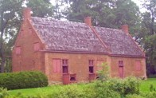

|
Kinderhook
by
Kinderhook was a village and town in old Albany County. It was and is located on the eastern side of the Hudson River about twenty miles southeast of Albany and about five miles upstream from Kinderhook Landing - Kinderhook's river port. Today, Kinderhook is located in northern Columbia County. Kinderhook was founded by overflow New Netherland families from Albany beginning during the 1660s. Traditional sources state there were thirty-one original patentees. The settlement formed on the west bank of the Kinderhook Creek and the first lots were deeded about 1681. A Dutch Reformed church is said to have been in operation there as early as 1712. Before that, spiritual services were supplied from Albany. A number of early Albany families including the Van Allens and the Van Alstynes basically relocated there while others including the Van Schaicks established branches in and around this agricultural center. Albany native Pieter Vosburgh was a justice of the peace for Kinderhook as early as 1681. A loyalty oath named prominent residents of greater Kinderhook in 1699. Kinderhook property holders were named on an assessment roll in 1744. The freeholders list for 1763 named propertied residents of the village and its hinterland. At that time, fifteen houses and a church had been built on a ridge along the Kinderhook Creek. A number of Albany people owned land located "behind Kinderhook." Prominent Albany attorney Peter Silvester moved his family to Kinderhook during the early 1770s. By that time, would-be Albany Stamp Tax collector Henry Van Schaack had returned to his Kinderhook roots. President Martin Van Buren was born at Kinderhook in 1782. The town of Kinderhook, within newly formed Columbia County, was erected in 1788. In 1790, the town of Kinderhook (somewhat larger than the village) had a population of 4,661 including 638 slaves and six free people of color. Kinderhook was incorporated as a village in 1838. The village of Kinderhook is located along the old Albany/New York Post Road (Route 9). One of its main cross streets is called "Albany Avenue," - the home of the Columbia County Historical Society. This page will relate to Kinderhook in its Albany context! The standard local history resource still is A History of Old Kinderhook, from Aboriginal Days to the Present Time, by Edward A. Collier (New York, 1914). It contains transcriptions of important community-based documents.
Modern photo of the Van Allen house located on Route 9H and said to date from the 1730s. privately posted 5/10/06; revised 7/13/06; last updated 6/25/15 |
{kind=link}